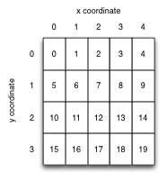

Lab 3 : Dynamic Memory Allocation
stack and heap, malloc() and free(), representing images
Goals
After this lab you will be able to
- State the difference between heap and stack memory allocation.
- For any variable declaration, determine whether it will be allocated on the stack or the heap and why.
- Use malloc() and free() to manage heap memory.
- Use fixed-size integer types.
- Interpret integer arrays as images and operate on them.
- Write nested loops.
Setup
In the terminal:
- Use the
cd command to change directory (the ls command to list the content of a directory may be helpful as well)
until you find yourself in your local repo.
- Download the new material for Lab 3, stored in a compressed file called 3.zip.
- Uncompress this file as follows:
$ unzip 3.zip
You should now see a directory called 3.
- Once you have uncompressed 3.zip, you can safely remove this compressed file with the
rm command.
- Add this new directory 3 to your Git repository:
$ git add 3
- Change directory into 3, which will be our working directory for Lab 3.
Demo Programs
In this lab, we will create, view and manipulate images using arrays as described below.
Some of the code we have just downloaded make use of a windowing system (GUI) available on Linux called
X11 in order
to display these images on the screen.
Let's build two simple demonstration programs to illustrate how such images can be displayed on the screen.
To do so, we run a program called
make at the command line. The
make
program compiles many program files into an executable. It also automatically determines which, of the many programs,
need to be recompiled, and issues the appropriate commands to recompile them.
A description of how to build the program is provided in a
Makefile.
make is the standard tool for managing builds in the UNIX
world. All IDEs such as Visual Studio, XCode and Eclipse have
either
make or a make-like tool under the hood. We will look
at
make in more detail later; for now we just run it with the supplied Makefile.
Demo Program text
-
Run make in the current directory. The relatively complex compile command make runs is echoed on the screen:
$ make
gcc -std=c99 -g -Wall -O3 `pkg-config --cflags x11` -o test test.c imgops.c draw.c png.c -lm -lpng `pkg-config --libs x11`
If successful, the executable test will be built. If the build fails, look at the file Makefile to see some options for fixing it.
Run the program test:
$ ./test
You should see a new window appearing with a completely black image. Click the mouse in the window to let the program continue and exit.
Now run the demonstration program again, this time with a PNG image filename as an argument:
$ ./test hadfield.png
This time the window should contain an image of a moustachioed astronaut. Again, click the mouse in the window to let the program continue and exit.
Read the program text of test.c that contains the
program's main(). You don't need to understand the code in png.c or draw.c:
just realize that the program in test.c is calling functions from these files to load an image
from a file, and draw it in a window. As you might expect, test.c hash-includes header files png.h and draw.h which contain declarations of the functions defined in the corresponding
C source files. If in doubt about this, look at the contents of the headers and C files in your editor.
Demo Program fractal
A second example is also provided: a program that draws a Mandelbrot Set fractal. You can build it with this command:
$ make fractal
and run it like this:
./fractal
Read the implementation in fractal.c to see how memory is allocated to store an image, how it is interpreted as a two-dimensional array,
and how the pixel colors are set by changing values stored in the array. The guide below explains this in detail.
There is no task associated with this fractal program. It is just a simple example to study.
Guide
Raster Images
In computer graphics, images are usually represented as arrays of pixels (picture elements). Each pixel describes the color of a single point in the
image. For grey-level images - regular people call them "black and white" images - a range of 256 shades of grey, smoothly varying from 0 (black) to 255 (white)
is enough to produce good-looking results.
We can conveniently and compactly represent a grey-level image as a one-dimensional array of unsigned chars of size (image_width * image_height).
To interpret the array as a two dimensional image, we assume that each row of pixels is stored consecutively in the array.
By convention, image coordinates have the origin in the top left, and y values increase downwards. We map image coordinates (x,y) to array indices thus:
index = x + y * image_width
The pixel indices of an image of width = 5, height = 4 are therefore:

A corresponding array declaration could be:
unsigned int width = 5;
unsigned int height = 4;
unsigned char img[ width * height ];
or, using the manual memory allocation described in detail below:
unsigned int width = 5;
unsigned int height = 4;
unsigned char* img = malloc( width * height * sizeof(unsigned char) );
Images represented this way are known as raster images, from the latin rastrum (a rake) from the days when images were drawn on the screen of a CRT monitor by steering an electron beam in the same line-by-line pattern. They are also called bitmaps from the days when each pixel was only a single bit representing black and white.
For speed, C does not initialize the values of array elements for you. If you want an all-black image, you must set the pixels to zero:
for( unsigned int i = 0; i < width*height; i++ )
img[i] = 0;
It can be faster to set all the pixels at once using the standard library function memset() instead:
memset( img, 0, width * height * sizeof(img[0]) );
See the memset() manpage for details.
Standard fixed-size integer types
Since the sizeof(int) varies with machine architecture, it is often useful to specify the size of your integer variables exactly. Then your code will use predictable variable sizes no matter which machine you run it on. The header file stdint.h defines a set of sized integer variable types for you, including:
int32_t (32 bit signed int)
uint32_t (32 bit unsigned int)
int64_t (64 bit signed int)
uint64_t (64 bit unsigned int)
int8_t (8 bit signed int)
uint8_t (8 bit unsigned int)
In this lab we will use uint8_t in place of its exact equivalent unsigned char for brevity. (It is C convention that the suffix _t denotes a type. )
Reminder/primer: Computer architecture memory layout
The memory layout for a process varies a bit by CPU architecture and OS, but the scheme used by Linux on X86 is pretty typical, and shown below. The program's text (compiled code) and static data exist in low memory, the function call stack in high memory, growing downwards, and the "heap" storage space in between. Ignore the "memory mapping segment" for now.

[Image reproduced from an
excellent online description of the memory layout of Linux by Gustavo Duarte.]
Storage for "automatic" variables
In C terminology, a function's local variables are called "automatic variables" because the storage for them is allocated automatically when the function is called. Similarly, when the function returns, all that storage is automatically freed. C implements this very efficiently by allocating all the space for local variables in the stack frame for the function. When the function returns, the stack pointer returns to its previous value, thus "freeing" all the local variables at small and near-constant cost.
Consider this code, that contains a common and nasty C bug:
#include <stdio.h>
char* get_name( void )
{
printf( "Please enter your name: " );
// should be enough space for a name
char line[1024];
// reads at most 1023 chars from stdin, up to first newline,
// EOF or error.
if( fgets( line, 1024, stdin ) == 0 ) // we ALWAYS check for I/O errors
{
perror( "failed to read a name" );
exit(1);
}
return line;
}
int main( void )
{
char* name = get_name();
printf( "Your name is %s\n", name );
return 0;
}
The image below shows a sketch of the function call stack for a run of this program up to and including line 23. When the program begins (1), the frame for main() is on the stack, and its local variables use stack memory for storage. The "stack pointer" keeps track of the current "top" of the stack (growing downwards).

When get_name() returns (2)--(3), the stack pointer is simply replaced to the end of calling function main()'s stack frame. The space used by get_name() will be reused by the next function call.
This mechanism explains:
- why you must declare all your variables in C: the compiler has to decide how large a function's stack frame needs to be before the function runs;
- another reason why C programs can be very fast: memory allocation, and particularly deallocation, are very cheap for automatic variables.
Find the bug!
Test your understanding so far: can you find the bug in get_name()?
Returning a pointer to an address in the stack frame!!!
The problem is the pointer returned by get_name() points to data inside that function's stack frame. When the function returns, that pointer is no longer valid. This sketch illustrates what happens:

At (2) the return value of get_name() is determined to be the address of the line character string. At (3) main()'s name variable is set to the return value of get_name() and that function's stack frame is popped from the stack and thus forgotten. At (4) name points into the forgotten stack frame. This is a nasty bug, since the correct data might still be there! At (5) the function call to printf() was entitled to overwrite the old data. There's a good chance that name now points to garbage.
This kind of bug is one of the main reasons people complain about C. The code looks like it should work: the intent is clear; it compiles;
it might even work in testing. Yet details of the implementation mean that the code is fatally bugged. This is undoubtedly a bad thing.
The fact that it may work in testing is particularly awful.
The good news is that modern compilers will generate a helpful warning if you return a pointer to memory allocated for an automatic variable.
Read your warnings. Better still, always use -Wall and fix all warnings in your builds, every time.
Bottom line: never return a pointer that points to an address in the stack frame.
Try it yourself
One of the source files you have downloaded for this lab, namely get_name.c, contains the
program above and demonstrates.
Open this file in your text editor and have a read through it.
Then compile it as follows:
$ gcc -Wall get_name.c -o gn
Read the warnings produced by the compiler and see if the compiler has spotted the bug.
Try to run the program and confirm that it breaks as anticipated.
First Solution: Allocate in caller
There are two different approaches to fixing this problem. The simpler and faster solution - and thus the best one when you can use it - is to have the calling function allocate the array and pass in a pointer to it, like so:
#include <stdio.h>
#include <stdlib.h>
void get_name( char line[], int maxlen )
{
printf( "Please enter your name: " );
// reads at most maxlen-1 chars from stdin, up to first newline,
// EOF or error.
if( fgets( line, maxlen, stdin ) == 0 ) // we ALWAYS check for I/O errors
{
perror( "failed to read a name" );
exit(1);
}
}
int main( void )
{
char name[1024];
get_name( name, 1024 );
// we don't need to be lucky this time
printf( "Your name is %s", name );
return 0;
}
This time get_name() receives a pointer to array name which is stored inside main()'s stack frame. Since this is guaranteed to exist longer than the call to get_name() this will work correctly.
Try it yourself
One of the source files you have downloaded for this lab, namely get_name_parent.c,
contains the code above.
Open this file in your text editor and have a read through it.
Then compile it as follows, enabling all warnings to verify that the program builds without complaining about "function returns address of local variable":
$ gcc -Wall get_name_parent.c -o gnp
Run the program and confirm that it works correctly.
Satisfy yourself that you understand it before moving on.
Second solution: Explicit memory allocation
The above method requires you to know how large an array your function call will need at most, and to allocate that much memory in advance. It is quite possible that you just don't know how much data to expect. Also, if the amount of data you expect is usually very small, but could be very large, it would be wasteful to always allocate a huge array just in case.
In these cases, we must allocate memory explicitly, using the
system call malloc(). This allocates memory on the heap, and
returns a pointer to it. The allocation will persist until explicitly
de-allocated by a call to free(). Because the allocation is
on the heap, it is available to any function that knows its
address, regardless of the current state of the stack.
Here is a simple example, omitting error checking for clarity:
// choose a random array length
int len = rand();
// allocate memory for an array of len ints
int* array = malloc( len * sizeof(int) );
// array is now a pointer to an array of len integers on the heap
// OR zero (null pointer) if the allocation failed
// ...
// (use the array)
// ...
// I am definitely finished with the array
free( array );
// make sure to cause a segmentation fault (segfault) if I use
// it again by mistake
array = NULL; // or array = 0;
The argument to malloc() is a size in bytes, so we almost
always use sizeof(some_type) as a multiplier. It returns a special type:
a void* (pronounced "void pointer"). By default C allows a void
pointer to be assigned to any other kind of pointer without having to
be converted explicity. All pointers are just memory addresses, after all.
A more realistic example
Maybe you are not convinced that this could ever be useful.
One of the source files you have downloaded for this lab, namely randomrandom.c,
contains a semi-realistic example with error checking included.
Open this file in your text editor and have a read through it.
Then compile it as follows:
$ gcc -Wall randomrandom.c -o rr
Run the program and confirm that it works as expected.
Make sure you understand the code completely before you move on.
Limited stack size
There is one more reason to use malloc(): the size of the
stack is very limited. The exact size depends on your OS, CPU
architecture, and current configuration, but is generally a few MB at
most, and can be as small as a few KB on embedded systems. The stack
has to be limited in size to avoid it growing into the heap and
corrupting both segments (called "smashing the stack"). You should allocate
large things on the heap with malloc() instead. If the heap
is out of space, malloc() tells you so and you can either
cope with it gracefully or quit your program. Automatic variables on
the stack do not give you this opportunity.
Once again, it is a downside of C that you must think about things like this. As usual, it's the price you pay for speed and control.
How large is too large for the stack?
The answer is system-dependent, but anything over a few KB should probably go on the heap.
Say that again?
If you'd like to read similar material on memory management, presented differently,
here is a good write-up by Paul Gribble.
Requirements
The task structure in this lab is different to your previous labs.
Your job, in this lab, is to finish the implementation of several function definitions in the
supplied file imgops.c. The grading robot will exercise
these functions to see if they meet the requirements (specifications).
Read the documentation in imgops.c or in imgops.h. This documentation
describes what each function does and the requirements you must satisfy when implementation each function.
Implement and compile a task at a time.
To test the function(s) of a task, extend the program in test.c so that it calls each of your
function(s)
and displays the resulting image in its own window.
How to do this will be demonstrated at the beginning of the lab session.
Writing tests is part of the work of a programmer, so get used to testing as you go.
Once you have implemented, compiled and tested a task in imgops.c,
you can add, commit and push this file to your Git repo and move on to the next task.
The grading robot will grade the pushed file, reporting on the task you have implemented and will
mark the other yet-to-be implemented tasks as unsuccessful (red boxes). Repeat the above steps until
all your tasks have successfully been tested (green boxes).
Important: DO NOT add a main() function in imgops.c.
Keep it in test.c. This is because the grading robot has its own test driver program with a
main() function. An extra main() will prevent the grading robot's test program
from compiling.
Also important: DO NOT make your imgops.c code rely on any other files.
For testing, the grading robot copies only your imgops.c and will not bring any of your
other files along.